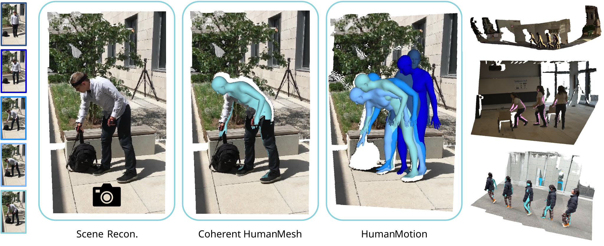
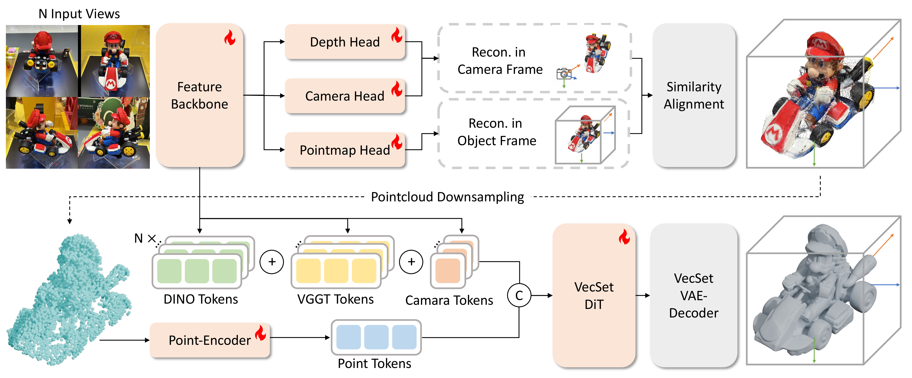
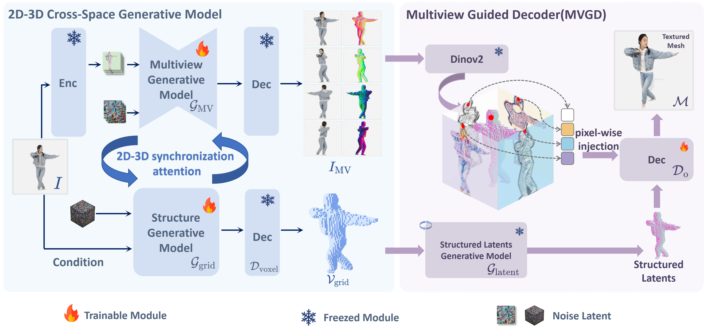
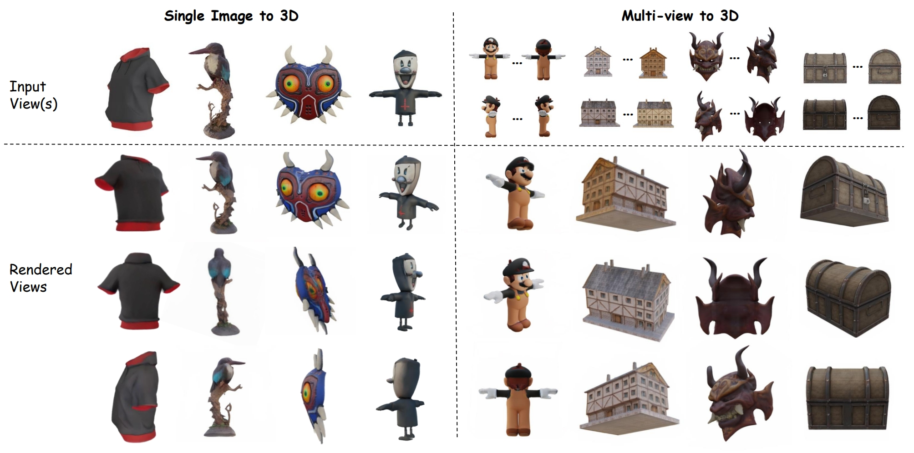
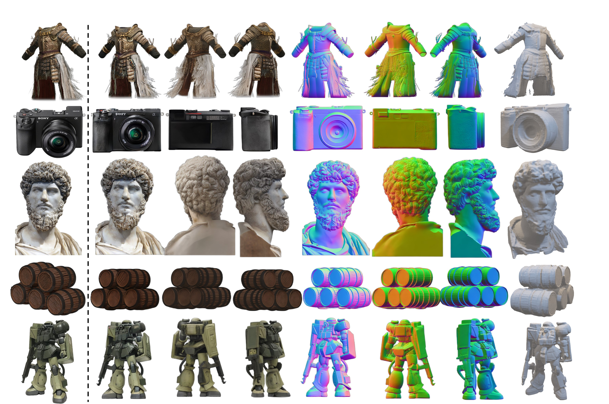
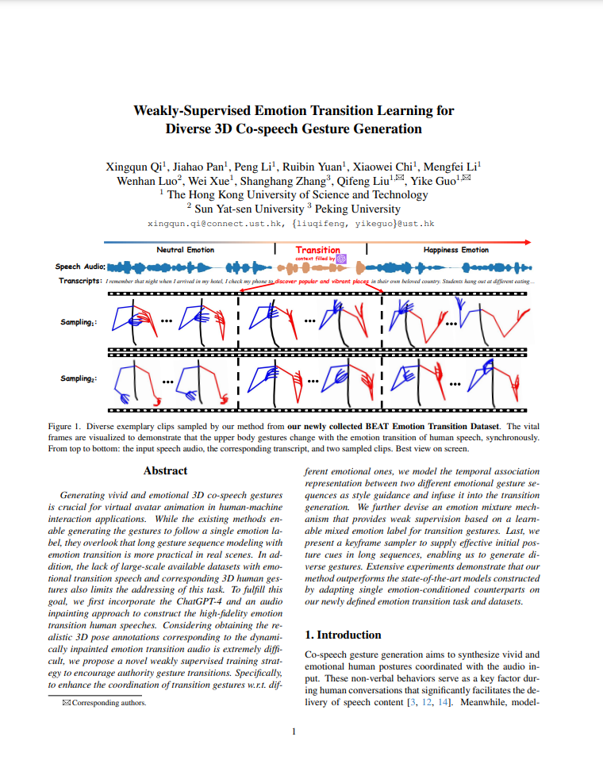
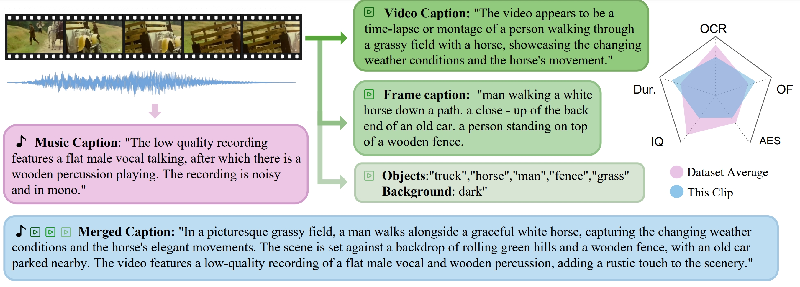

CVPR 2026
Bio
I am a PhD student at The Hong Kong University of Science and Technology, advised by Prof. Yike Guo and Prof. Wenhan Luo. Before that, I received my B.S. in Computer Science and Technology from Sun Yat-Sen University.
World Models, 3D Vision, Video Generation. My long-term goal is to build fully interactive virtual worlds where people can perceive, create, move, and collaborate with the freedom and continuity of a real environment.
Publications

CVPR 2026


NeurIPS 2025

TVCG

NeurIPS 2024


arXiv 2024
Physics in Medicine and Biology, 2024
Leading a project on Interactive World Model. Supervisors: Yi Zhang and Guanglu Song.
Research intern focusing on 4D reconstruction and world models. Supervisor: Prof. Yuan Liu.
Research assistant focusing on NeRF. Supervisor: Prof. Shanghang Zhang.
Computer vision engineer.
Research assistant focusing on multimodal learning. Supervisor: Prof. Weijiang Yu.
PhD Student. Supervisors: Prof. Yike Guo and Prof. Wenhan Luo.
B.S. in Computer Science and Technology.